МИНИСТЕРСТВО ТРАНСПОРТНОГО СТРОИТЕЛЬСТВА СССР
ТЕХНИЧЕСКИЕ УКАЗАНИЯ
ПО ПРИМЕНЕНИЮ АЭРОМЕТОДОВ
НА ИЗЫСКАНИЯХ МОСТОВЫХ
ПЕРЕХОДОВ
ВСН 37-67
Минтрансстрой СССР
МОСКВА 1967
ПРЕДИСЛОВИЕ
Настоящие указания включают основные положения выпущенных ранее ВСН 37-62, дополнены новыми рекомендациями, основанными на результатах исследований и опытно-производственных работах, выполненных ЦНИИСом в 1964 - 1965 гг. при изыскании ряда крупных мостовых переходов на трассе Тюмень-Сургут. Эти рекомендации позволяют за счет изменений технологии производства работ и использования вертолета существенно расширить сферу целесообразного применения аэрометодов при изысканиях мостовых переходов.
Указания предусматривают выполнение аэрогидрометрических измерений и получение необходимых топографических характеристик (топографические план и профили морфостворов) как на реках с незначительной шириной русла, так и на круглых реках с широкой затопленной поймой.
Технические указания предназначаются взамен ВСН 37-62.
Указании составлены канд. техн. наук Б.К. Малявским при участии инж. Ю.С. Смирнова.
Замечания и предложения просьба направлять по адресу: Москва, И-329, Игарский проезд, д. 2, ЦНИИС, отделение изысканий и проектирования железных дорог.
Зам. директора института А. Смольянинов
|
Министерство транспортного строительства СССР |
Ведомственные строительные нормы |
ВСН 37-67 |
|
Технические указания по применению аэрометодов на изысканиях мостовых переходов |
Минтрансстрой Взамен |
I-1. Настоящие «Технические указания» предназначены для изысканий мостовых переходов и участков трассы железных и автомобильных дорог, проходящих вдоль рек (долинных ходов), с помощью аэрометодов в сочетании с наземными измерениями, объем которых определяется допустимостью и степенью изученности района изысканий.
I-2. В «Технических указаниях» изложены методы и приемы летносъемочных и камеральных аэрогидрометрических и фототопографических работ, позволяющие получить необходимые для разработки проектного задания: скорости и направления поверхностных течений, расходы воды, глубины отметки уровней воды, продольные профили рек, линии судовых ходов и движения льдин, масштабные фотосхемы и топографические планы на участках проектируемых мостовых переходов и долинных ходов. В необходимых случаях для разработки рабочих чертежей выполняют дополнительные работы для уточнения топопланов и профилей живых сечений.
Материалы аэрофотосъемки районов мостовых переходов могут быть дешифрированы с целью установления характера, интенсивности и направления руслового процесса по методике, разработанной Государственным Гидрологическим институтом (ГГИ).
|
Внесены Всесоюзным научно-исследовательским институтом транспортного строительства, Главтранспроектом |
Утверждены Техническим управлением Министерства
транспортного строительства |
Срок введения - |
I-3. В зависимости от ширины разлива реки следует применять различные технологические схемы производства аэрогидрометрических работ. При ширине разлива менее 1,5 км работы выполняют на основе одномаршрутной аэрофотосъемки границ разлива. При большей ширине прокладывают несколько продольных и поперечных маршрутов, ограниченных специально устанавливаемыми маркировочными буйками.
I-4. Состав и объем аэрогидрометрических и аэрофототопографических работ определяют в зависимости от степени гидрологической изученности водотока, наличия живого сечения в районе перехода и ширины разлива. Предусматривают выполнение натурных наблюдений и наземных измерений, выполняемых одновременно с полевыми изыскательскими работами, как правило, в меженный период.
I-5. Аэрогидрологические и фотографические работы выполняют на основе измерения аэрофотоснимков. При изысканиях переходов через реки с шириной разлива менее 100-1250 м необходимо использовать вертолет МИ-4 в съемочном варианте, от 150 м до 1,5 км наиболее удобен самолет АН-2, а при ширине разлива более 1,5 км следует использовать самолет АН-2 и вертолет.
Самолет или вертолет должен быть оборудован серийной аэрофотосъемочной аппаратурой, включающей топографический аэрофотоаппарат с главным фокусным расстоянием в диапазоне 50-100 мм (в зависимости от вида работ); радиовысотомер с фоторегистратором; статоскоп; оптический бортовой визир; командный прибор.
Аппаратура должна устойчиво работать при минимальных интервалах времени между моментами съемки и фиксировать моменты съемки с точностью ±0,1 сек.
I-6. В зависимости от намеченной технологии работ, в подготовительный период заготавливают материалы и устройства для выполнения аэрогидрометрических измерений. К ним относятся: устройства для выпуска глубинных и поверхностных поплавков; компоненты для составления жидкого индикатора, маркировочные буйки.
I-7. В основе определения поверхностных скоростей течения и расходов воды при выполнении аэрогидрометрических работ лежат следующие предпосылки:
а) Поверхностные скорости определяют путем измерения смещения деталей водной поверхности (специально пущенные поплавки или струи жидкости, мелкие плывущие предметы и т.д.), изобразившихся на смежных перекрывающихся аэрофотоснимках.
Поверхностные поплавки т1, т2, ..., тn, изобразившиеся на плановых перекрывающихся аэрофотоснимках Р1 и Р2 (рис. 1), за интервал времени Δt=t2-t1 переместятся под воздействием течения на расстояния Δl1, Δl2, …, Δln. Скорости течения в этих точках получим из выражений:
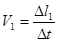 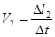 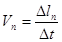
Рис. 1. Изображение поверхностных поплавков на смежных аэрофотоснимках
Следовательно, для получения значений скорости течения необходимо зафиксировать моменты времени фотографирования t1 и t2 и на основании измерения аэрофотоснимков получить значения Δl.
Моменты съемки фиксируют с помощью часов с секундной стрелкой, имеющихся в комплекте аэрофотоаппаратов.
Для получения величины смещения поверхностных поплавков необходимо измерить расстояние до них от условной линии (аа и а’а’ на рис. 1), проходящей через контурные точки, расположенные на берегах.
Разности расстояний х’1-x1, x’2-х2, …, х’n-хп по левому и правому снимкам представляют собой смещения точек поверхности воды в масштабе аэрофотоснимков. Для получения скорости течения на этих участках необходимо знать масштаб аэрофотоснимков, тогда скорости течения можно найти из выражения
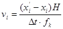
где Н - высота полета, м;
fk - главное фокусное расстояние фотоаппарата, мм;
Δt - интервал времени между моментами съемки, сек.
Смещения точек на аэрофотоснимках под воздействием течения (рис. 2) аналогичны разностям продольных параллаксов ΔР при отличии фотографируемой поверхности от плоскости.
Следовательно, при восстановлении стереоскопической модели по такой паре аэрофотоснимков пересечение лучей, проектирующих смещенные точки, произойдет в зависимости от направления съемки выше (см. рис. 2, а) или ниже (см. рис. 2, б) действительной поверхности воды. Поэтому при стереоскопическом рассматривании пары снимков поверхность воды будет казаться выпуклой или вогнутой тем больше, чем больше скорость течения. Используя это явление, смещение точек под воздействием течения можно измерять стереофотограмметрическим способом с точностью ±0,03 - 0,05 мм в масштабе аэрофотоснимков.
Рис. 2. Схема стереофотограмметрического измерения скорости течения:
а - пересечение лучей, проектирующих смещенные точки выше поверхности воды, б - пересечение лучей, проектирующих смещенные точки ниже поверхности воды
В этом случае разности продольных параллаксов ΔРi, измеренные вдоль направления течения, соответствуют величинам Δl. Следовательно, при стереофотограмметрическом методе измерений формула для определения значений скорости течения может быть представлена в виде
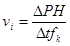
Рис. 3. Определение расхода воды методом поплавков-интеграторов:
а - профиль, б - план
Этот способ получения скорости поверхностных течений может быть применен при следующих условиях: на перекрывающихся аэрофотоснимках должны изображаться детали, перемещающиеся на поверхности воды под воздействием течения; на каждом аэрофотоснимке должны изображаться обе границы разлива, оба берега реки или какие-либо неподвижные детали на поверхности реки (острова, бакены, специально выставленные буйки). Если интервалы времени между моментами съемки измеряют с точностью 0,1 сек, а высоты фотографирования с ошибками не более 10 м, то погрешности в значениях скорости течения составляют ±0,05 м/сек.
б) Расход воды определяют аэрометодом, используя принцип глубинных поплавков-интеграторов. Если со дна реки выпустить поплавок, то на некотором расстоянии L от точки выпуска (рис. 3, а) он всплывает на поверхность воды. При этом в ламинарном потоке элементарный расход q по вертикали можно было определить из выражения
q=vпL, (3)
где vп - подъемная скорость всплывания поплавка.
Так как в реальных условиях речной поток турбулентен, то на величину сноса поплавка влияют пульсационные возмущения, искажающие линейную зависимость между сносом L и элементарным расходом q. Это влияние можно учесть в формуле (3) с помощью коэффициента, полученного опытным путем или построением графика для определенного вида поплавков и типа рек.
Если выпустить такие поплавки одновременно с различных: точек гидроствора и сфотографировать их в момент выхода на поверхность воды, получим эпюру элементарных расходов (рис. 3, б), по которой можно вычислить расход воды в створе наблюдений (см. пп. II-19, II-23).
Таким образом, для определения расхода воды методом поплавков-интеграторов нужно разместить устройства для их выпуска вдоль створа и измерить расстояния до выхода поплавков на поверхность воды.
При определении расходов воды аэрометодом применяют жидкие глубинные поплавки, образующиеся в результате постепенного выхода специальной жидкости-индикатора из сосудов, сброшенных вдоль гидроствора.
В качестве индикатора используется смесь отработанного авиационного масла с керосином в пропорции 1:1. Удельный вес такой смеси должен быть равен 0,86. Сосуды, обеспечивающие выпуск индикаторов со дна реки, изготовляют по описаниям приложения 1.
Метод жидких поплавков-интеграторов в сочетании с аэрофотографированием выхода поплавков на поверхность воды и использованием тарировочных зависимостей, полученных из опыта, обеспечивает точность расхода воды ±5-6%.
II-1. Перед началом аэрогидрометрических работ по имеющимся картографическим или аэросъемочным материалам намечают участки реки, подлежащие обследованию, и створы, вдоль которых должны производить измерения.
Створы наблюдений намечают так, чтобы они, по возможности, проходили через характерные контуры местности и надежно опознавались с самолета или вертолета. Одновременно намечают пункты базирования вертолета или самолета, расположение которых должно обеспечивать минимальные непроизводительные полеты.
II-2. Полевые аэрогидрометрические наблюдения проводит экипаж самолета или вертолета, в который входит и бортоператор, под руководством инженера-гидролога. Подготовку к каждому полету (заправка и изготовление сбросных устройств) выполняют 1-2 рабочих на аэродроме базирования.
Необходимые натурные обследования и измерения (привязка аэроснимков, промеры живых сечении, гидрологическое дешифрирование аэроснимков) выполняют в удобное для полевых работ время специально выделяемые исполнители.
II-3. Летносъемочные работы выполняют при ширине реки до 100-150 м с вертолета МИ-4, от 150 м до 1,5 км - с самолета типа АН-2 или вертолета. Фокусное расстояние аэрофотоаппарата в первом случае должно быть не более 100 мм, во втором - 70 мм. Цикл работы аэрофотоаппарата не должен превышать 3 сек.
II-4. Как правило, летносъемочные работы следует выполнять в пасмурную погоду или при переменной облачности, когда исследуемый участок покрыт тенью от облаков.
В солнечную погоду работать рекомендуется рано утром или вечером, когда солнечные блики не попадают в объектив АФА. При этом аэрофотосъемку следует производить с красным или оранжевым фильтром КС-17.
II-5. Перед началом летносъемочных работ заготавливают сосуды с индикатором, количество которых определяют по выражению
N=2ап,
где а - намечаемое количество промерных точек (вертикалей) на створе наблюдений;
п - общее количество измерений в период прохождения паводка.
Сосуды в необходимом количестве заполняют жидким индикатором накануне дня вылета и устанавливают в специальном ящике на самолете или вертолете.
II-6. Для определения необходимых гидрологических характеристик на каждом из промерных створов производят следующие летносъемочные работы:
пролет самолета вдоль створа наблюдений и сбрасывание сосудов, заполненных жидким индикатором. Для определения положения сосудов на створе, одновременно со сбрасыванием, фотографируют точки падения сосудов на поверхность воды (вспомогательные аэрофотоснимки);
плановую аэрофотосъемку исследуемого участка в период выхода на поверхность воды жидкого индикатора из размещенных вдоль створа сосудов (основные аэрофотоснимки).
Рис. 4. Элементы, определяемые при сбрасывании сосудов с индикатором
II-7. При определении расхода реки, в целях повышения точности и контроля, следует производить два измерения: оба или одно на главном створе, а второе в 100-200 м выше него по выбору инженера-гидролога.
Для подводной съемки русла на участке перехода может быть назначено 2-3 и более дополнительных створов. В этом случае наблюдения производят последовательно на каждом из намеченных створов, начиная с нижнего.
II-8. Пролет по створу наблюдений при сбрасывании сосудов с индикатором выполняют по картам или предварительно полученным аэрофотоснимкам, на которых нанесен створ наблюдений.
Высоту полета относительно поверхности реки выбирают в зависимости от ширины разлива и фокусного расстояния аэрофотоаппарата (табл. 1).
Момент начала сбрасывания сосудов определяют с помощью оптического бортового визира. Для этого исходя из предполагаемой высоты полета и скорости самолета или вертолета рассчитывают величину упреждения М или угол упреждения (рис. 4).
Таблица 1
|
fk, мм |
|||
|
50 |
70 |
100 |
|
|
Высота полета, м |
|||
|
50 |
40 |
50 |
70 |
|
100 |
100 |
150 |
200 |
|
200 |
150 |
200 |
300 |
|
500 |
300 |
350 |
600 |
|
1000 и более |
500 |
500 |
1000 |
Упреждение М устанавливают по формуле
М=0,5VсТ,
где Vс - скорость полета, м/сек;
Т - время падения сосуда, сек, получаемое из выражения
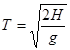
Угол упреждения φ находят по формуле
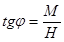
Если момент начала сбрасывания определяют по предварительно полученным аэрофотоснимкам, то команду на сброс подают при полете над точкой, отстоящей от ближайшего уреза воды на вычисленное упреждение М. Положение самолета или вертолета над этой точкой устанавливают визуально по контурам местности.
При использовании бортового визира вычисленный угол упреждения φ устанавливают на визире и при пересечении изображения ближнего уреза воды средней горизонтальной нитью подают команду на сброс.
Сосуды сбрасывают по согласованию с командиром самолета и с соблюдением необходимых условий безопасности. Интервал между моментами сбрасывания Δt зависит от ширины разлива, количества сбрасываемых сосудов и скорости самолета или вертолета. Ориентировочно для рек шириной до 300 м эти интервалы должны быть 0,5 сек, а для более широких рек - в зависимости от намеченного числа вертикалей и скорости полета:
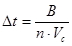
где В - ширина разлива, м;
п - намеченное число вертикалей.
II-9. Одновременно со сбрасыванием сосудов при полете вдоль створа наблюдений выполняют аэрофотосъемку. Аэрофотоаппарат включают за 5-10 сек до подачи команды на сбрасывание. Интервал между моментами съемки устанавливают минимальным; аэросъемку прекращают через 5-10 сек после конца сбрасывания.
II-10. После размещения сосудов с индикатором вдоль створа наблюдений необходимо произвести плановую аэрофотосъемку в период выхода индикатора на поверхность воды. Заход на плановую аэрофотосъемку должен быть выполнен так, чтобы съемка начиналась не позднее чем через 3-4 мин после окончания сбрасывания.
Съемку производят несколькими (см. пп. II-8) продольными маршрутами с соблюдением 60% продольного перекрытия, оси которых проходят посредине фотографируемого участка реки. Масштаб фотографирования устанавливают с расчетом обязательного изображения на каждом аэроснимке обеих границ разлива (табл. 2).
Таблица 2
|
Масштаб съемки |
|
|
Менее 100 |
1 : 1000 |
|
150-200 |
1 : 2000-1 : 3000 |
|
300 |
1 : 3000-1 : 4000 |
|
400 |
1 : 4000-1 : 5000 |
|
500 |
1 : 5000-1 : 7000 |
|
800 |
1 : 8000 |
|
1000 |
1 : 1000 |
|
1500 |
1 : 1500 |
Высоту фотографирования от поверхности воды находят из выражения:
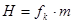
где т - знаменатель принятого масштаба съемки.
Начало и конец продольного маршрута штурман определяет из расчета получения на крайних снимках створа наблюдений и следов индикатора на поверхности воды.
Интервал между моментами фотографирования устанавливают минимальным.
II-11. В результате летносъемочных работ с целью определения расходов воды должны быть получены следующие материалы:
аэрофотоснимки следов падения сосудов с индикатором в воду;
плановые аэрофотоснимки района перехода с четкими следами выхода индикатора на поверхность и с изображенной показаний часов на каждом кадре;
расшифрованные пленки фоторегистратора с изображением индикатора радиовысотомера;
бортжурнал с записями о проведении аэрогидрометрических работ.
II-12. При наличии живых сечений по створам наблюдений аэрометодами определяются только поверхностные скорости и направления поверхностных течений на участке проектируемых мостовых переходов.
II-13. Перед аэрофотосъемкой для определения скорости и направления поверхностных течений при отсутствии плывущих предметов следует произвести маркировку поверхности воды путем сбрасывания с самолета ампул (или бутылок из тонкого стекла), заполненных каким-либо машинным маслом, или листов белой бумаги.
При ширине разлива менее 100 - 150 м маркирующие предметы сбрасывают, пролетая над серединой реки на высоте 100 м, с таким расчетом, чтобы участок протяжением 300 - 400 м выше и ниже оси перехода был замаркирован.
Маркировку более широких рек осуществляют при двойном пролете самолета поперек реки выше створа перехода на 300 - 400 м с интервалом между маршрутами 1 - 2 мин. Если маркируют с помощью бумаги, то в каждом из маршрутов сбрасывают по половине стандартной 1000-листовой пачки писчей бумаги на каждые 50 м ширины створа с интервалом и 1 сек.
При маркировании с помощью масляных пятен ампулы (или бутылки) с маслом сбрасывают через каждые 50 м вдоль створа. Бумагу можно применять как в облачную, так и в ясную погоду, масло - только в пасмурную погоду или при съемке под облачностью.
При сбрасывании бумаги необходимо учесть возможность относа ее ветром и поэтому предварительно следует сделать пробное сбрасывание.
II-14. Необходимость предварительного маркирования поверхности реки возникает, как правило, на спаде паводка. В период ледохода и в пик паводка, когда на поверхности реки обычно много плывущих предметов, а также и при молевом сплаве предварительной маркировки не требуется.
II-15. Аэрофотосъемку поверхности реки при определении поверхностных скоростей и направлений струй выполняют сразу же после маркирования. В процессе аэрофотографирования обязательно фиксируют показания часов и радиовысотомера.
В результате летносъемочных работ с целью определения поверхностных скоростей и направления струй должны быть получены аэрофотоснимки района перехода в различные фазы прохождения паводка; пленки с показаниями радиовысотомера.
II-16. Материалы аэрофотосъемки для получения гидрологических характеристик можно обрабатывать в стационарных и полевых условиях. Комплект оборудования состоит из стереоскопов, параллактических линеек и топографического стереометра, а измерения выполняют на контактных аэрофотоснимках.
II-17. Перед обработкой аэрофотоснимков составляют проект этих работ, отчисляют показания радиовысотомера и часов.
Из полученных в каждом цикле измерений аэрофотоснимков отбирают и комплектуют вспомогательные с изображением всплесков от падения сосудов в воду; основные с изображением следов от выхода индикатора на поверхность воды. Из основных аэроснимков подбирают комплект снимков для составления по ним топографического плана (см. раздел IV).
На основании сопоставления основных и вспомогательных аэроснимков нумеруют вертикали, соответствующие сброшенным в каждом из циклов сосудам с индикатором.
II-18. Показания радиовысотомера и часов отсчитывают при помощи лупы на просвет; высоту полета - до целых метров, моменты съемки - до десятых долей секунды (см. приложение 2). В показания радиовысотомера вводят тарировочные поправки. Если за данный год нет графика тарировочных поправок радиовысотомера, то их определяют на основании графиков за предыдущие годы.
II-19. Расходы воды устанавливают путем измерения расстояний L от точек падения сосудов в воду (вертикалей) до точек выхода жидкого индикатора на поверхность воды. Эти измерения выполняют на основных и вспомогательных аэроснимках.
II-20. При помощи вспомогательных аэрофотоснимков определяют линию сбрасывания сосудов. Для этого необходимо смонтировать вспомогательные снимки в фотосхему, на которой изображаются обе границы разлива. При монтаже снимков, на которых изображается земная поверхность, следует найти средний процент продольного перекрытия и разворот снимков относительно направления маршрута («елочка»).
После этого снимки с изображением водной поверхности монтируют не по контурным точкам, а по среднему продольному перекрытию и развороту снимков в маршруте (рис. 5, a).
Из смонтированной таким образом фотосхемы проводят начальную линию (линию створа) так, чтобы она проходила через четкие контурные точки на берегах рек и вблизи точек падения сосудов, изобразившихся на вспомогательных аэрофотоснимках (см. рис. 5, а). Затем эту линию створа по контурам на изображении берегов переносят на все основные снимки с изображениями следов индикатора на поверхности воды (рис. 5, б).
Рис. 5. Схема расположения аэроснимков на створе наблюдений:
а - расположение основных и вспомогательных аэроснимков; б - монтаж маршрута вспомогательных аэроснимков: 1 - линия створа; 2 - основной плановый аэроснимок; 3 - аэроснимки, полученные при сбрасывании, А и В - контурные точки
II-21. Расстояния от вертикалей (точек падения сосудов в воду) до точек выхода индикатора на поверхность воды получаются как сумма
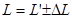
где L’ - расстояния от линии створа до точек выхода индикатора на поверхность воды;
ΔL - расстояния от линии створа до вертикалей, получаемые по вспомогательным снимкам. Эти расстояния положительные, если всплеск выше линии створа.
Для получения расстояний от створа до точек выхода
индикатора на поверхность воды L используют основные
аэрофотоснимки (контактные отпечатки), на которых точной линейкой с помощью
лупы или топографического стереометра измеряют эти расстояния в масштабе снимка
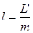
При измерениях на топографическом стереометре снимки устанавливают в параллактической каретке так, чтобы линия створа была перпендикулярна оси х-х прибора. Затем монокулярно совмещают нить стереометра со створом и наблюдаемыми последовательно крайними точками следов индикатора на поверхности (см. рис. 5, б) и производят отсчеты по винту продольных параллаксов с точностью 0,1 мм.
Такие измерения выполняют на всех аэроснимках маршрута, соответствующих каждой серии размещенных вдоль створа сосудов. В процессе измерений следует учитывать, что положение створа может быть смещено относительно точек выхода индикатора из-за рельефа местности. Поэтому при перенесении линии створа на аэроснимки, где эта линия располагается далее 10-15 мм от центра снимка, следует использовать контурные точки, выбранные на урезах воды. В противном случае в положение контурных точек, определяющих исходный створ на этих снимках, следует вводить поправки за рельеф.
Каждое расстояние на снимках определяют измерениями, соответственно количеству аэроснимков с изображением следов выхода индикатора, полученных для каждой серии размещенных вдоль створа сосудов. Эти измерения могут расходиться между собой до 2-3 мм в масштабе снимков.
Результаты измерения расстояний на всех аэрофотоснимках каждого маршрута анализируют и после исключения значений, отличающихся от среднего более чем на 15%, вычисляют среднее расстояние в масштабе снимков:
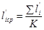
где К - число принятых измерений для вертикали с номером i.
По этим средним значениям и вычисляют расстояния с учетом масштаба аэрофотоснимков.
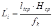
где Нср - среднее значение высоты фотографирования маршрута по показаниям радиовысотомера.
Поправки ΔL к расстояниям L’ измеренным на основных аэроснимках, определяют при помощи намерений на вспомогательных снимках, полученных в период сбрасывания. Для этого линейкой измеряют расстояния Δl от центров всплесков каждого сосуда до линии створа, перенесенной с основных снимков. Эти измерения производят с точностью порядка 0,2-0,3 мм.
Поправки ΔL=Δl·т -вычисляют на основе известного из показаний радиовысотомера значения высоты фотографирования вспомогательных снимков.
Рис. 6. График зависимости q=f(L)
II-22. По полученным для каждой вертикали значениям L вычисляют элементарные расходы g по графику g=f(L) (рис. 6), который построен по натурным данным.
Результаты измерения расстояний до точек выхода индикатора на поверхность воды и определения элементарных расходов заносят в ведомости, приведенные в приложении 3.
II-23. Эпюры элементарных расходов строят обычным порядком. При этом положения промерных вертикалей на створе относительно левого уреза воды получают в результате измерений на аэрофотоснимках. Для этого на одном из основных аэрофотоснимков, на котором линия створа располагается вблизи центра снимка, находят положения промерных вертикалей на створе наблюдений. Эти положения получают в результате пересечения направления полосы, образовавшейся вследствие растекания индикатора по поверхности воды и линии створа (рис. 7).
Рис. 7. Схема измерения расстояний до вертикалей вдоль створа
Расстояния S1, S2, ..., Sn от уреза до точек на линии створа измеряют на аэроснимке при помощи линейки с точностью до 0,1 мм относительно начального ориентира, расположенного на левом берегу. В качестве такого ориентира используют четкий постоянный контур, хорошо изображающийся на всех аэрофотоснимках. Расстояния S1, S2, ..., Sn до вертикалей от начального ориентира вычисляют умножением на масштаб аэрофотоснимка. На эпюру расходов наносят все значения элементарных расходов, полученные в каждом цикле измерений при одном горизонте воды.
Затем полученные точки соединяют плавной осредняющей кривой, причем отклонения этой кривой от точек, соответствующих измеренным величинам, не должны превышать 5% от значений измеренных элементарных расходов q. Общий расход воды по створу Q вычисляют как площадь эпюры элементарных расходов.
II-24. Поверхностные скорости находят в результате стереоскопических измерений основных аэроснимков на топографическом стереометре или с помощью параллактических линеек под стереоскопом.
Для измерения значений поверхностных скоростей течения в точках, соответствующих промерным вертикалям, на которых определяли элементарные расходы, из серии основных аэрофотоснимков подбирают 2 - 3 стереопары с изображением перемещающегося по поверхности воды индикатора. Для повышения точности определения следует подбирать стереопары, в которых продольное перекрытие между аэрофотоснимками составляет 30 - 40%.
Отобранные таким образом пары аэроснимков закладывают в стереометр и предварительно ориентируют до получения отчетливого стереоэффекта. При этом в соответствии с пп. I-7 поверхность воды из-за смещения деталей на водной поверхности за интервал времени между моментами съемки будет представляться выпуклой или вогнутой.
Так как величина этой выпуклости или вогнутости является функцией скорости течения, то для ее определения необходимо стереоскопически измерить кажущееся превышение водной поверхности над урезом воды в наблюдаемой точке.
Для того чтобы эти превышения были свободны от влияния углов наклона аэроснимков, необходимо ориентировать нить стереометра вдоль выбранного створа по аналогии с известным в фотограмметрии способом прямой линии. Такое ориентирование достигается разворотом нити стереометра корректорами хо или Q до положения, когда разности продольных параллаксов при наблюдении противоположных урезов будут меньше ±0,03 мм.
После этого последовательно изводят нить стереометра на изображения следов индикатора на поверхности воды в точках промерных вертикалей и берут отсчеты по винту продольных параллаксов.
Значения поверхностных скоростей течения в измеряемых точках получают из выражения:
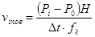
где Р0 - отсчет, полученный при стереоскопическом наведении нити стереометра на поверхность воды, мм;
Р1 - отсчет, соответствующий урезу воды в наблюдаемом створе, мм.
Для контроля результатов измерений и повышения их точности поверхностные скорости в одних и тех же точках определяют по двум-трем перекрывающимся аэрофотоснимкам из различных маршрутов. Расхождения между полученными по разным стереопарам значениями поверхностных скоростей не должны превышать ±0,08-0,10 м/сек. В качестве окончательного результата принимается среднее из полученных значений. Измерения на аэрофотоснимках и вычисление скоростей течения оформляют в ведомости (см. приложение 4).
На основании полученных значений поверхностных скоростей течения обычным порядком строят эпюры поверхностных скоростей, при этом расстояния между точками вдоль створа получают так же, как изложено в п. II-23.
II-25. Построение эпюр поверхностных скоростей и вычисление фиктивных расходов, если работы производились при известном живом сечении, выполняют известными методами. Истинные расходы воды определяют по фиктивным с учетом коэффициента К.
Для рек, на которых известно значение коэффициента С
формулы Шези ( 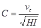
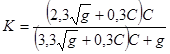
или по табл. 3.
Большие и средние реки, для которых не определены надежные значения коэффициента С, коэффициент К принимается равным 0,85.
Таблица 3
|
С |
К |
|
20 |
0,78 |
|
25 |
0,80 |
|
30 |
0,82 |
|
35 |
0,84 |
|
40 |
0,85 |
|
50 |
0,87 |
|
60 |
0,88 |
|
70 |
0,90 |
|
80 |
0,91 |
II.26. При необходимости знать распределение поверхностных скоростей течения на участке реки в районе проектируемого мостового перехода, скоростное поле потока на этом участке изображают линиями равных скоростей (изотахами).
Для этого либо определяют скорости течения по ряду характерных створов, либо наносят изотахи в результате стереоскопических измерений непосредственно на изображении поверхности реки. В последнем случае для измерений следует использовать стереопары, имеющие продольное перекрытие 60%. При этом предварительно выполняют геодезическое ориентирование аэроснимков в стереометре.
Правильное положение коррекционных приспособлений стереометра находят в результате измерения разностей продольных параллаксов шести точек, расположенных на береговых урезах (рис. 8). В большинстве случаев отметки этих точек для больших водотоков можно принимать равными, но при уклоне реки больше 0,0005 их необходимо интерполировать на всем протяжении участка, пользуясь средним значением уклона, полученным по карте масштаба 1 : 100000.
Задача ориентирования состоит в том, чтобы последовательным изменением установок коррекционных приспособлений добиться положения, при котором отсчеты на все эти точки были или равными (при малом уклоне реки), или соответствовали предварительно вычисленным разностям продольных параллаксов.
Истинные разности продольных параллаксов рассчитывают по формуле:
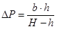
При этом b измеряют на левом снимке, а высоту фотографирования Н получают на основе показаний радиовысотомера.
Рис. 8. Схема расположения точек при ориентировании снимков в стереометре
Снимки в кассеты прибора устанавливают так, чтобы их главные точки совпадали с центрами вращения кассет, а линия уреза была параллельна оси х-х прибора. Затем ориентируют снимки по начальному направлению, последовательно вращая их в своих плоскостях. Следует учитывать, что в этом случае начальное направление располагается на изображении водной поверхности, поэтому снимки следует ориентировать вдоль береговых урезов, а не по линии центров, как обычно.
Признаком правильного ориентирования снимков в приборе является хорошее стереоскопическое восприятие по всей площади стереопары.
Геодезическое ориентирование снимков с изображением реки в стереометре заключается в последовательном наблюдении пар точек 1-2; 3-4 и 5-6 (см. рис. 8).
Отсчеты на точки, входящие в пары, должны быть равны между собой, поэтому предварительно, без расчета истинных разностей продольных параллаксов, корректорами Q и xо добиваются равенства продольных параллаксов на точках 1-2 и 3-4. После этого неравенство отсчетов на точках 1-2 и 3-4 устраняют путем изменения длины коррекционной линейки ΔН0. Вследствие того, что на конвергентном устройстве стереометра взаимный продольный угол предварительно не устанавливался, полученная модель может иметь прогиб, который определяют, наблюдая среднюю пару точек 5-6. Прогиб устраняют последовательным изменением угла β на конвергентном устройстве.
После выполнения всех указанных действий производят повторные стереоскопические наведения на все точки. Если разности между измеренными и вычисленными продольными параллаксами не превышают ±0,03 мм, то ориентирование закончено.
Для нанесения на изображении поверхности воды линий, равных скоростей течения (изотах) составляют таблицу изотах (см. приложение 5). Отсчеты по винту продольных параллаксов, соответствующие тому или иному значению скорости течения, получают из выражения:
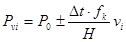
где Р0 - средний отсчет, соответствующий береговому урезу, полученный после ориентирования стереопары в стереометре;
знак «плюс» соответствует выпуклой форме наблюдаемой поверхности воды, «минус» - вогнутой.
Изотахи наносят аналогично горизонталям при стереоскопической рисовке рельефа. Для проведения линий на изображении реки, соответствующей конкретной скорости течения, на шкале продольных параллаксов устанавливают предварительно вычисленный отсчет из таблицы изотах (см. приложение 5).
После этого, рассматривая стереоскопически модель поверхности воды, перемещают основную каретку прибора и отмечают последовательно точки, в которых пространственная нить касается модели поверхности воды. По этим точкам проводят карандашом изотаху. В случае резкого изменения скоростей течения целесообразно износить не все изотахи, а через одну или несколько. Правильность нанесения изотах на стереопаре необходимо проверить контрольными измерениями в 5-7 точках, расположенных равномерно по поверхности воды. Эти измерения заключаются в стереоскопическом наведении нити на произвольные точки, определении отсчета на них по винту продольных параллаксов и вычислении значений скорости течения в соответствии с п. II-24.
Вычисленная скорость течения должна в пределах 0,10 м/сек соответствовать значению, полученному по нанесенным ранее изотахам.
II-27. Направление поверхностных течений определяют непосредственно по изображению полос индикатора на основных аэрофотоснимках (см. приложение 3, рис. 2).
Если съемку производили в период ледохода или маркировали поверхность реки не с помощью сосудов с индикатором, а другим методом, то направления струй получаются в виде векторов, длину и направление которых определяют по смещениям поплавков на смежных аэроснимках маршрута.
II-28. Условные отметки уровня воды определяют относительно принятого начала высот, выбранного на одном из урезов вблизи створа перехода.
Превышения относительно этой начальной точки устанавливают при помощи стереоскопических измерений в зоне 30 - 40% перекрытии аэроснимков одного из маршрутов основной съемки.
При этом снимки ориентируют в стереометре таким образом, чтобы нить стереометра проходила в пределах 1 - 2 мм вблизи исходной точки, а отсчеты на оба уреза были с точностью 0,03 мм равны между собой. После этого измеряют разность продольных параллаксов между исходной точкой и урезом воды и вычисляют превышение по формуле
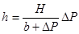
Такие измерения выполняют не менее чем по двум различным парам снимков (разных маршрутов). Расхождения не должны превышать 1/3000 от высоты полета. За окончательное значение превышения принимают среднее арифметическое из всех измерений.
Условные отметки уровней получают из выражения
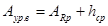
где АRp - отметка условного начала высот;
hср - среднее из нескольких измерений превышение начала высот под наблюдаемым горизонтом воды.
II-29. Глубины в точках промерных вертикалей при определении расходов по поплавкам-интеграторам для каждого цикла измерений, соответствующего определенному уровню волы, вычисляют на основании получаемых с осредняющей кривой (см. п. I-7) значений элементарных расходов, относящихся к каждой из промерных вертикалей, и поверхностных скоростей течения по формуле
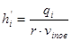
где q - значение элементарного расхода для вертикали с номером i, снятое с эпюры расходов;
vi - поверхностная скорость течения на этой же вертикали;
r
- отношение 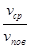
Отношение принимается в соответствии с рекомендациями п. II-25.
II-30. Для построения профиля живого сечения русел рек, размывы в которых незначительны, используют значения глубин, полученные в результате всех серий измерений при различных уровнях воды. При этом условные отметки точек живого сечения Aiдна получают как разность
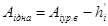
где Аiур.в -условная отметка горизонта воды, при котором определялась глубина h’i в данной точке.
Профиль живого сечения получается как средняя линия дна, проведенная между нанесенными точками всех измерений. Отклонение отдельных измерений от осредняющей профильной линии не должно превышать 10% от средней глубины реки.
Для размываемых русел профиль живого сечения строят по результатам каждого отдельного измерения.
II-31. При изысканиях переходов через реки с шириной разлива более 1,5 км необходимые гидрологические и топографические данные получают на основе сочетания аэрометодов с натурными измерениями. Объем натурных измерений и наблюдений определяются степенью гидрологической и топографической изученности района работ.
II-32. Методика аэрогидрометрических наблюдений зависит от степени затопления поймы в период паводка.
На подъеме и спаде паводка, когда ширина разлива меньше 1,5 км, аэрогидрометрические наблюдения выполняют в соответствии с пп. II-3 - II-30. В эти же периоды, при незатопленной пойме, ведут и аэросъемочные работы для получения топографических планов и профилей по морфостворам, а также необходимые натурные обследования и измерения.
II-33. Аэрогидрометрические наблюдения в периоды, когда ширина разлива превышает 1,5 км, производят вдоль створов, на которых предварительно размещают пенопластовые привязные буйки с грузом, изготовленные в соответствии с приложением 6.
Точки створа, на которых устанавливают буйки, намечают на фотосхеме створа и располагают на бровках главного русла и основных проток, а также на перегибах рельефа и границах растительности. Расстояние между этими точками на пойме должно быть не менее 500 м. Буйки размещают на створе с помощью вертолета при его зависании выбранной точкой. На берегах главного русла и проток укладывают по два буйка, а на всех остальных точках - по одному.
Длину тросика lтр, соединяющего поплавок с грузом, устанавливают из расчета максимального уровня воды Аг.в и средней отметки поймы Аn.
После установки вдоль створа маркировочных буйков аэрогидрометрические наблюдения в период прохождения паводка могут выполняться как с вертолета, так и с самолета.
II-34. Аэрогидрометрические наблюдения в период затопления поймы проводят в следующем порядке:
а) с самолета (или вертолета) при пролете его вдоль замаркированного буйками створа сбрасывают сосуды с индикатором; одновременно от одного уреза до другого фотографируют точки падения сосудов в воду;
б) прокладывают с интервалом 5-7 мин три съемочных маршрута с 60-процентным перекрытием вдоль створа измерений;
в) производят маршрутную съемку вдоль основного русла и главных проток, отмеченных на створе парными буйками; интервал времени между сбрасыванием сосудов и съемкой русла не должен превышать 20-25 мин.
Основные параметры аэрофотографирования при аэрогидрометрических наблюдениях приведены в табл. 4.
Количество наблюдений и время их проведения устанавливает гидролог. До и после затопления поймы должно быть выполнено не менее чем по 2-3 наблюдения.
Среднее количество сосудов с индикатором, сбрасываемых в каждом наблюдении, составляет: на пойменной части - 4Вn; на русловой части 10Вр, где Вп и Вр - соответственно ширина русла и поймы, км.
Таблица 4
|
Высота полета Н, м |
Масштаб аэросъемки |
Фокусное расстояние аэрокамеры, мм |
|
|
Сброс сосудов с индикатором |
300-400 |
1 : 5000 - 1 : 10000 |
50-70 |
|
Съемка вдоль створа измерений |
300-400 |
1 : 5000 - 1 : 10000 |
50-70 |
|
Съемка основного русла и проток |
0,7В |
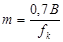 |
50-100 |
II-35. Летносъемочные работы для получения топографических характеристик участка проектируемого мостового перехода выполняют в первой фазе паводка, когда пойма не затоплена. Они состоят из площадной аэрофотосъемки для получения генеральных планов мостовых переходов масштаба 1 : 10000 м маршрутной аэрофотосъемки вдоль намеченных морфостворов для получения профилей морфостворов и детальных топографических планов участка мостового перехода.
Основные параметры аэрофотосъемки, выполняемой при изысканиях мостовых переходов через реки с широкими затопляемыми поймами, приведены в табл. 5.
Таблица 5
|
Масштабы |
Фокусное расстояние АФА, мм |
Высота полета, м |
||
|
аэросъемки |
плана |
|||
|
Площадная аэросъемка для получения генерального плана |
1: 15000 - 1 : 25000 |
1 : 10000 |
50-100 |
1500-2500 |
|
Маршрутная аэросъемка вдоль морфостворов |
1 : 10000 - 1 : 12000 |
1 : 2000 |
50-100 |
1000-1200 |
Площадную аэрофотосъемку выполняют с 60-процентным продольным и поперечным перекрытиями. Одновременно с аэрофотосъемкой проводят и аэронивелирование с регистрацией показаний радиовысотомера и статоскопа.
II-36. В результате летносъемочных работ должны быть получены:
аэрофотоснимки площадной съемки участка мостового перехода;
аэрофотоснимки, выполненные вдоль намеченных морфостворов;
аэрофотоснимки, полученные при сбросе сосудов с индикатором вдоль створа измерений;
аэрофотоснимки, выполненные в период выхода и перемещения на поверхности воды индикатора;
репродукция накидного монтажа, составленного для каждого наблюдения;
контактная площадная фотосхема участка мостового перехода;
пленки с показаниями радиовысотомера и статоскопа.
II-37. Полевые обследования выполняют для проведения детального гидрологического дешифрирования речной долины в пределах границ разлива и поймы на участке мостового перехода. При этом предварительно на основе полученных аэрофотоснимков и контактной фотосхемы участка перехода производят камеральное дешифрирование с целью определения и отграничения на фотосхеме и аэроснимках тех или иных элементов местности по прямым или косвенным признакам. В процессе камерального дешифрирования речной долины и поймы на участке перехода определяют и отмечают на фотосхеме:
очертания долины в плане;
характер поймы, пойменные террасы;
оползневые и обвальные участки, конусы выноса и места выхода грунтовых вод;
примерное положение границы затопления поймы;
очертания основного русла и главных проток, а также общий характер меандирования.
Одновременно составляют программу и намечают участки полевого дешифрирования, задачами которого являются:
установление на месте границ максимальных разливов и нанесение их на аэроснимки или фотосхемы;
определение типа основных грунтов по участкам поймы и отграничение однотипных участков на фотоматериалах;
установление степени заболоченности поймы и отграничение заболоченных участков;
выборочная проверка результатов камерального дешифрирования.
В результате полевых обследований и выборочного дешифрирования получают отдешифрированные аэрофотоснимки и записку с общей характеристикой обследуемого участка с необходимыми табличными и графическими данными
Привязку скважин при геологической съемке на участке и створе перехода выполняют также по аэрофотоснимкам с наколом и соответствующим оформлением точек съемки. В качестве общей картографической основы при гидрологическом дешифрировании и съемке участка перехода может быть использована контактная фотосхема участка, полученная в полевых условиях после производства аэрофотосъемки
II-38. Схема и объем полевых геодезических работ по планово-высотной подготовке аэрофотоснимков для составления генеральных планов района перехода определяются геодезической обеспеченностью района изысканий и стадией проектирования.
На предварительных изысканиях, в необжитых районах, в качестве планово-высотной основы, как правило, используют точки, координаты и высоты которых снимают с мелкомасштабных карт, а также данные аэронивелирования (рис. 9).
При изысканиях для проектного задания проводят планово-высотную подготовку аэрофотоснимков, полученных по основному створу перехода. Подготовка осуществляется в системе координат трассы от магистрального хода с помощью планово-высотных поперечников (см. рис. 9). Планово-высотные поперечники разбивают через 12 - 15, а высотные - через 6 - 8 базисов.
При изысканиях в обжитых районах, обеспеченных геодезической основой, выполняют планово-высотную подготовку маршрутов, проложенных вдоль створов, являющихся каркасными для площадной аэрофотосъемки. В этом случае используют схему подготовки (рис. 10). По основному створу прокладывают магистральный ход с системой планово-высотных поперечников через 12 - 15 и высотных - через 6 - 8 базисов, а по верхнему и нижнему створам поперечники размещают в 1,5 раза реже.
Методы производства геодезических работ по планово-высотной подготовке аэроснимков должны обеспечивать точность определения координат и высот в соответствии с требованиями к основе для карт масштаба 1 : 10000.
Рис 9. Схема геодезического обоснования генерального плана перехода в необжитом районе:
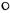
Рис. 10. Схема геодезического обоснования генерального плана перехода в обжитых районах:
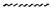 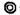
II-39. Камеральную обработку материалов аэрогидрометрических наблюдений, выполненных по основному расчету русла и протокам, в первый период паводка, когда пойма не затоплена, производят в соответствии с пп. II-16, II-30.
II-40. Материалы наблюдений, полученные в период затопления поймы, обрабатывают с целью получения основных гидрологических характеристик вдоль створов измерений. Перед началом обработки этих материалов составляют проект камеральных работ, в процессе которого из всех полученных в каждом цикле наблюдений отбирают аэроснимки, полученные:
при сбросе сосудов с индикатором на створе;
в период выхода индикатора на поверхность воды.
На все отобранные аэроснимки снимают с пленок показания радиовысотомера и часов. На каждом из створов измерений получают три-четыре комплекта аэроснимков створа с изображением на одном из маршрутов створных буйков и точек сброса, а на остальных маршрутах - створных буйков и следов выхода индикатора и их положений в разные моменты времени с интервалом в 7 - 10 мин.
II-41. По аэроснимкам каждого маршрута по створу измерений монтируют фотосхему. Причем монтаж фотосхем выполняют с использованием изображений створных буйков, контролируя точность монтажа так, чтобы на фотосхеме створные буйки располагались на прямой. Таким образом получают три-четыре фотосхемы, на одной из которых изображаются точки сброса сосудов с индикатором, а на других - изображение следов выхода индикатора на поверхность воды. По числу и расположению точек относительно урезов воды и створных буйков нумеруют вертикали, соответствующие сброшенным сосудам с индикатором.
Средний масштаб каждой фотосхемы mср определяют на основе показаний радиовысотомера из выражения
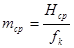
где fk - фокусное расстояние АФА, исправленное за деформацию фотоматериала.
II-42. Расходы воды определяют на основе измерения отрезков Lр (рис. 11), являющихся расстояниями от точек входа сосудов в воду до места выхода индикатора на поверхность воды. Измерения отрезков выполняют следующим образом:
на фотосхеме сбросов сосудов измеряют расстояние от линии створных буев до изображения всплеска при падении сосуда в воду Δl. Измерения выполняют с помощью линейки с миллиметровыми делениями с точностью до ±0,1 мм (см. рис. 11, а);
Рис. 11. Определение расходов воды:
а - фотосхема сброса; б - рабочая фотосхема
на рабочих фотосхемах с изображением выходов индикатора измеряют расстояние от линии створных буев до крайних точек следов индикатора на поверхности воды l’ (см. рис. 11, б);
определяют величину этих отрезков в натуре, умножая измеренные значения на знаменатель среднего масштаба каждой фотосхемы, получая ΔL и L;
значения расходных отрезков получают суммированием этих величии, причем если линия створа (линия отсчета) располагается между точкой падения и изображением выхода индикатора, то величине ΔL придается знак «минус».
II-43. Величину элементарного расхода по каждой вертикали получают из выражения
q=0,131Lр.
Эпюры элементарных расходов строят обычным порядком. Положение вертикалей в плане на створе измерений получают следующим образом: переносит по направлению следа индикатора вертикаль на створ измерений, обозначенный буйками, и измеряют расстояние до них относительно изображений двух ближних буйков. Плановое положение каждого буйка на створе относительно береговых урезов получают на основе среднего из измерений по нескольким фотосхемам. В каждом случае используют средний масштаб каждой из фотосхем.
Масштаб построения эпюры расходов по вертикали в зависимости от ширины разлива составляет от 1 : 1000 до 1 : 50000.
На эпюру расходов наносят все полученные в результате измерений значения элементарных расходов при данном горизонте воды. Полученные на эпюре точки соединяют плавной осредняющей кривой таким образом, чтобы ее отклонения от измеренных точек не превышали 5% измеренных элементарных расходов. Общий расход по створу получают одним из принятых методов.
II-44. Скорости и направления поверхностных течений находят в результате измерения последовательного положения поплавков, изобразившихся на фотосхемах различных по времени съемочных маршрутов.
Скорости течения по створу измеряют следующим образом:
а) на последнюю по времени съемки маршрутную фотосхему переносят с помощью монтажа снимков по изображению створных буйков положение идентичных точек (поплавков) с предыдущих маршрутов. Таким образом получают траектории перемещения поплавков под воздействием течения (рис. 12). Так как интервалы времени между снимками смежных маршрутов составляют 5 - 7 мин, то длина участков траектории получается достаточно большой – 200 - 400 м;
Рис. 12. Перемещение поплавков под воздействием течения
б) измеряя на фотосхеме участки траектории и зная время между моментами съемки, получают значения поверхностных скоростей по выражению:
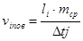
где li - измеренный на фотосхеме участок траектории;
Δtj - интервал времени между моментами съемки соответствующих снимков разных маршрутов, сек;
Рис. 13. Стереопара аэрофотоснимков с полосами индикатора на вертикалях
в) направления течений изображаются полосами индикатора, в явном виде показывающих направления струй на вертикалях. Кроме того, разность длин (рис. 13), изобразившихся на снимках полос, позволяет произвести контрольные измерения скорости течения по формуле
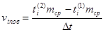
где
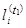
и mср - то же для другого маршрута;
Δt - интервал времени между моментами съемки соответствующих снимков измеряемых маршрутов, сек.
Расхождение в значениях скоростей течения, полученных с использованием аэроснимков разных маршрутов, не должны превышать ±0,15 м/сек.
II-45. Траектории поплавков и направления струй на вертикали, изображающиеся полосами индикатора на фотосхеме, вместе с численными значениями скоростей течения на вертикалях копируют с маршрутной фотосхемой морфоствора на восковку, а затем переносят на детальный план перехода и используют при построении эпюр по створу. Результаты измерений по фотосхеме записывают в бланк (см. приложение 3).
II-46. Отметки уровней воды в даты наблюдений получают либо по данным водомерных наблюдений, либо на основе измерений по аэроснимкам. Во втором случае измеряют превышения между урезом и исходным репером на одном из берегов в соответствии с п. II-28. Привязку исходного репера выполняют в процессе планово-высотной подготовки аэроснимков.
II-47. Живое сечение русла получают в результате натурных измерений в процессе полевых обследований в период до затопления поймы или со льда. Живое сечение затопленной части поймы получают на основе фотограмметрических измерений аэроснимков, полученных вдоль морфостворов. Методика этих измерений приведена в п. II-29.
II-48. В результате обработки материалов аэрогидрометрических наблюдений по створам измерений для различных периодов прохождения паводка на участке перехода получают следующие данные:
элементарные и общие расходы воды русла и поймы;
скорости поверхностных течений и направления струй на русловой и пойменной частях;
живые сечения русла и поймы по створу измерений;
глубины воды и отметки горизонтов в даты наблюдений;
положения промерных вертикалей на створе.
Используя эти данные, принятыми способами строят эпюры расходов и скоростей.
Рис. 14 Технологическая схема аэрогидрометрических работ
II-49. В результате камеральной обработки материалов аэрогидрометрических наблюдений должны быть получены:
график колебания уровней в период наблюдений;
график зависимости расходов воды (русловых и общих) от горизонта Q=f(H) и Qр=f(H);
график зависимости средних скоростей течения от горизонта v=f(H);
график зависимости площади живого сечения от горизонта ω=f(H);
эпюры расходов и скоростей течения в период наблюдений;
картограммы траекторий перемещения поплавков и направления струи на створах при характерных горизонтах воды;
линии фактического судового хода, фиксирующие проход судов и караванов в период производства работ.
Все необходимые данные, полученные в результате обработки аэрогидрометрических наблюдений, переносят с фотосхем на детальный план перехода. При этом используют средний масштаб фотосхемы, определенный по расстоянию между урезами воды или характерными точками фотосхемы и плана.
II-50. При проведении комплексных аэрогидрометрических наблюдений на реках с большой шириной разлива в труднодоступных малообжитых районах большое значение имеет правильная организация и последовательность выполнения работ. Примерная технологическая схема аэрогидрометрических работ, условия по срокам показана на схеме (рис. 14).
III-1. При изысканиях долинных ходов с помощью аэрометодов:
составляют приближенный профиль водотока на основе аэронивелирования;
составляют уточненный продольный профиль водотока при различных уровнях воды на основе измерения аэрофотоснимков и наземной геодезической привязки;
определяют скорость и направление поверхностных течений на прижимных участках;
определяют расходы воды при различных уровнях на участках проектируемых мостовых переходов.
III-2. Летносъемочные работы при изысканиях долинных ходов выполняют с самолетов АН-2, ЛИ-2 или вертолета, оборудованных серийной аэрофотосъемочной аппаратурой (см. п. I-5). При этом проводят:
маршрутную аэрофотосъемку с аэронивелированием вдоль речной долины (рис. 15);
аэрофотосъемку поверхности реки на прижимных участках и участках предполагаемых мостовых переходов при разных уровнях с целью определения скорости и направления течений.
III-3. Маршрутную аэрофотосъемку с аэронивелированием вдоль речной долины выполняют прямолинейными маршрутами, ось которых должна располагаться по осредненному направлению фотографируемого участка реки. Масштаб и высоту аэрофотографирования подбирают в зависимости от масштаба топографического плана, который должен быть построен по материалам аэрофотосъемки. Для обеспечения надлежащей точности аэронивелирования высота полета должна быть не меньше 1000-1500 м.
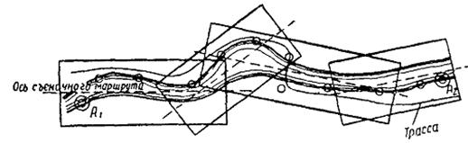
Рис. 15. Схема аэрофотосъемки долинного хода и размещения высотных опознаков:
© - точки с известными отметками; О - высотные опознаки
Аэрофотосъемку выполняют при интервалах 2,5-3 сек между моментами фотографирования с обязательной регистрацией показаний радиовысотомера и статоскопа.
Для повышения точности определения продольного профиля водотока каждый маршрут прокладывают дважды, в прямом и обратном направлениях.
Аэронивелирование и обработку полученных данных выполняют в соответствии с «Технологическими правилами аэронивелирования» (ВСН 38-60); продольный профиль составляют в соответствии с рекомендациями приложения 5.
III-4. Аэрофотосъемку поверхности воды выполняют по аналогии с положениями п. II-4.
Особенностью аэрофотосъемки при изысканиях долинного хода является необходимость получения характеристик поверхностных течений на участках протяженностью 10-15 км. Количество наблюдений поверхностных течений устанавливает гидролог.
III-5. Полевые привязочные работы выполняют одновременно с топографическими работами по трассе и включают планово-высотную привязку створных точек на оси проектируемых мостовых переходов, а также высотную привязку опознаков, равномерно расположенных вдоль русла для построения продольного профиля реки. Одновременно с привязочными работами можно дешифрировать и опознавать на аэрофотоснимках следы уровней высоких вод, отметки которых могут быть получены в результате камеральной обработки аэрофотоснимков.
Привязку и опознавание опорных точек выполняют, используя комплект аэрофотоснимков маршрутной аэросъемки.
III-6. Данные аэронивелирования обрабатывают для построения продольного профиля водотока в соответствии с рекомендациями приложения 5 и «Технологических правил аэронивелирования». Сфера использования этих данных ограничивается стадией проектного задания, так как точность получения отметок продольного профиля речной долины составляет ±1,0 м, а средний уклон реки получается с ошибкой ±0,06‰.
Для построения продольного профиля используют материалы аэрофотосъемки и аэронивелирования, полученные в результате маршрутной аэрофотосъемки. При этом на основании показаний радиовысотомера и статоскопа вычисляют отметки проекций главных точек (центров) аэрофотоснимков на водной поверхности.
Отметки точек аэронивелирования вычисляют в системе высот нескольких исходных точек на концах маршрута, отметки которых подписаны на карте масштаба 1:100000; если же имеются более надежные высотные данные, то при вычислении отметок их принимают за исходные.
При длине маршрута более 10 км в отметки точек, получаемые аэронивелированием, необходимо внести поправки за наклон изобарической поверхности в соответствии с «Технологическими правилами производства аэронивелирования».
III-7. Для определения расстояний между точками продольного профиля из снимков маршрутной аэрофотосъемки изготовляют контактную фотосхему участка долинного хода. На эту фотосхему переносят все точки, отметки которых определены аэронивелированием (рис. 16). Расстояния до этих точек относительно принятого начала измеряют на фотосхеме вдоль русла циркулем-измерителем. Раствор циркуля устанавливают в зависимости от извилистости русла равным 5-10 мм. Промеры по фотосхеме выполняют для контроля дважды в прямом и обратном направлениях.
Для получения расстояний между высотными точками в горизонтальном масштабе продольного профиля используют средние масштабы фотосхем на участках протяжением в 10-15 аэрофотоснимков.
Рис. 16. Образец контактной фотосхемы участка долинного хода
Средний масштаб участка фотосхемы определяют из выражения
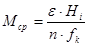
где Нi - показания радиовысотомера для аэроснимков обрабатываемого участка с учетом тарировочной поправки;
n - число аэрофотоснимков на обрабатываемом участке фотосхемы;
fк - фокусное расстояние АФА с учетом деформации контактных отпечатков.
Расстояния до высотных точек в масштабе составляемого продольного профиля получаются из выражения
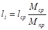
где lср - расстояния, полученные в результате измерений по фотосхеме;
Мпр - знаменатель горизонтального масштаба составляемого продольного профиля.
III-8. Все урезные точки, имеющие аэронивелировочные отметки, наносят на профиль по расстояниям, полученным с фотосхемы. По нанесенным отметкам находят уравненное положение профильной линии. При этом в соответствии с изображением реки на фотосхеме ограничивают участки реки без водопадов и порогов протяжением до 30 - 40 км. На основе аэронивелировочных отметок урезов воды проводят профильную кривую по линейке или лекалу таким образом, чтобы сумма отклонений точек от этой кривой на обрабатываемом участке была близка нулю (рис. 17).
Рис. 17. Кривая продольного профиля реки, уравненная по данным аэронивелирования
III-9. Уточненные продольные профили при различных уровнях воды строят на основе материалов аэрофотосъемки, выполненной в различные фазы паводка, и наземной геодезической привязки аэрофотоснимков. При этом отметки уровня воды определяют фотограмметрическим измерением превышений между высотными опознаками и урезом воды (см. п. II-28).
Аналогично определяют и отметки высоких и исторических уровней воды, которые отдешифрированы камеральным путем или опознаны в поле и нанесены на аэрофотоснимки.
Расстояния между высотными точками для построения продольного профиля получают в результате измерений по фотосхеме в соответствии с п. III-7.
III-10. Скорость и направление поверхностных течений на прижимных участках проектируемых мостовых переходов определяют в соответствии с пп. II-24-II-27. Расходы воды при различных уровнях на створах, с измеренным в процессе полевых работ живым сечением, вычисляют на основе полученных на аэрофотоснимках поверхностных скоростей в соответствии с п. I-7.
IV-1. При выполнении изысканий мостовых переходов аэрометодами одновременно с определением гидрологических характеристик рек производят и аэрофототопографические работы. В результате их составляют фотосхемы, ситуационные или топографические фотопланы, являющиеся топографической основой для трассирования мостового перехода, назначения схемы регуляционных сооружений и инженерно-геологической съемки. Кроме того, при изысканиях переходов через реки с широкими затопленными поймами аэрофототопографическим методом получают также продольные профили морфостворов.
IV-2. Размеры ситуационного плана должны охватывать всю ширину разлива до отметок на 1-2 м выше горизонта высоких вод. Для каждого из вариантов перехода длина плана вверх и вниз по реке должна составлять 1,5-2,0 ширины разлива.
Масштаб ситуационных планов определяется шириной разлива и выбирается по табл. 6.
Таблица 6
|
Масштаб аэрофотосъемки |
Масштаб плана |
|
|
150-400 |
1 : 3000 - 1 : 5000 |
1 : 2000 |
|
500-1000 |
1 : 6000 - 1 : 10000 |
1 : 5000 |
|
Свыше 1000 |
1 : 15000 - 1 : 25000 |
1 : 5000 - 1 : 10000 |
IV-3. Ситуационные планы переходов через реки с шириной разлива до 1,5 км составляют на основе материалов маршрутной съемки, а при изысканиях переходов через реки с большей шириной разлива для составления планов используют площадную аэрофотосъемку и каркасные маршруты.
IV-4. В зависимости от схемы и объема выполненной плановой подготовки аэрофотоснимков ситуационные планы изготовляют в той или иной координатной системе или условно ориентированными. При изысканиях в необходимых районах с редкой сетью геодезических пунктов основой ситуационных планов являются изолированные базисы или опознаки, полученные с карт масштаба 1 : 100000.
IV-5. Камеральные работы при составлении ситуационного плана перехода включают: построение плановой основы; фототрансформирование аэроснимков; составление фотоплана.
В зависимости от схемы наземной планово-высотной подготовки аэроснимков основа плана создается методами фотополигонометрии, построением сетей на мультиплекс или же построением опорных сетей аналитическим методом с помощью ЭВМ.
При составлении плана перехода по материалам площадной аэросъемки по каркасным маршрутам, проложенным вдоль морфостворов, развиваются опорные сети, являющиеся опорой для маршрутов площадной съемки перехода. Плановые опорные сети можно строить любым способом, но предпочтительнее в данном случае использовать сочетание аналитического метода с фототриангулированием на мультиплексе.
IV-6. Фототрансформирование аэроснимков и составление фотоплана перехода выполняют обычными методами. На полученный в результате камеральных работ фотоплан перехода наносят не только общетопографическую ситуацию, но и результаты камерального и полевого гидрологического и инженерно-геологического дешифрирования. Оформленный таким образом генеральный план мостового перехода является основой для выбора положения перехода.
IV-7. Детальные топографические планы узкой полосы вдоль выбранного положения оси мостового перехода составляют на основе аэроснимков маршрутной аэрофотосъемки и наземной планово-высотной подготовки в масштабах 1 : 1000 при ширине разлива (или русла) до 500 м и 1 : 2000 при ширине разлива более 500 м.
IV-8. Планы перехода через реки с шириной разлива до 1,0 км составляют по материалам продольной маршрутной съемки с изображением на снимках границ разлива. В этом случае за высотную основу для построения топографического плана берут отметки максимального и минимального уровней воды и границы разлива при этих уровнях. Плановая основа получается либо на основе изолированных базисов, либо опознаков, привязанных к магистральному ходу по трассе.
IV-9. Планы переходов, характеризующихся широкой затопленной поймой, не изображающейся на снимках одного аэросъемочного маршрута, составляют по аэроснимкам каркасного маршрута, выполненного вдоль основного створа перехода (см. рис. 9 или 10). Масштаб съемки вдоль основного маршрута не должен быть мельче 1 : 12000.
IV-10. Планово-высотной основой топографических планов на участках с широкой затопляемой поймой является опорная сеть, полученная в результате аналитического фототриангулирования с использованием ЭВМ или универсальных приборов. При этом планово-высотные опознаки должны располагаться не реже чем через 6-7 базисов в случае аналитического сгущения и через 4-5 базисов - при сгущении на универсальных приборах (для масштаба съемки 1 : 10000 - 1 : 12000).
IV-11. Планы составляют известными методами на стереометрографе или стереопроекторе.
При использовании дополнительного координатографа получается графический план масштаба 1 : 2000.
На стереопроекторе возможно составление плана дифференцированным методом, когда контурную часть плана получают фототрансформированием, а рисовку рельефа производят по высотам пикетных точек, полученным на стереопроекторе и перенесенным по контурам на трансформированные снимки.
Расхождения в высотах по сводкам между стереопарами допускаются в пределах 1 м, т.е. принятого сечения рельефа горизонталями.
IV-12. На топографический план с аэроснимков переносят гидрологическую ситуацию, полученную в результате аэрогидрометрических наблюдений в пик паводка на основном створе-линии равных скоростей течения (изотахи), линии равных глубин (изобаты), траектории движения льдин и поплавков, линии судового хода. Кроме того, на составленный топоплан переносят элементы ситуации, отдешифрированные при полевых обследованиях - границы высоких вод, границы пойменных болот с их характеристиками, места выхода грунтовых вод и т.п.
IV-13. В условиях широких затопляемых пойм продольные профили морфостворов также строят на основе измерений по аэрофотоснимкам.
Продольный профиль основного морфоствора строят по аэроснимкам каркасного маршрута высотной подготовки аэроснимков, выполненных в соответствии со схемами (см. рис. 9 или 10). Направление профиля выбирают по предварительно изготовленной контактной фотосхеме, а положение и отметки профиля определяют в процессе фототриангулирования на универсальных приборах или аналитического фототриангулирования.
Допускается построение профиля и дифференцированным методом. В этом случае расстояние по профилю определяют по фотосхеме с использованием ее среднего масштаба, а высоты набирают с помощью топографического стереометра с ориентированием снимков методом продолжений.
IV-14. Продольные профили вдоль вспомогательных створов (верхнего и нижнего, см. рис. 9 или 10) строят на основе привязки в плане к точкам карты масштаба 1:100000, а в качестве высотных опознаков используют отметки урезов основного русла и проток, а также данные аэронивелирования.
ПРИЛОЖЕНИЯ
В качестве устройства для выпуска индикатора применяют бутыли емкостью 0,75 л из толстого стекла со специальной пробкой из пластмассы (рис. 1). В верхней части пластмассовая пробка имеет четыре отверстия: три симметрично расположены по борту диаметром 5 мм и одно - в верхней крышке пробки.
Для придания прочности при ударе о воду и улучшения баллистических свойств дно и нижняя треть стенок сосуда снабжаются бетонным балластом. К сосуду во избежание плотного его прилегания ко дну реки прикреплены крестообразно два металлических стержня.
Перед летносъемочными работами устройство заполняют смесью керосина и авиационного отработанного масла с удельным весом смеси 0,86, который определяют ареометром. Для получения смеси ее составляющие с предварительно вычисленным отношением их объемов наливают в открытый сосуд (например, в ведро) и перемешивают в течение 1 - 2 мин, после чего смесь через воронку наливают в сосуд.
Рис. 1 Устройство для выпуска жидкого индикатора:
1 - стержни, 2 - бетонный балласт, 3 - пластмассовая пробка
|
№ снимков |
Показания РВ, м |
Тарировочные поправки, м |
Высота фотографирования, м |
Показания часов, |
|
54 |
595 |
-5 |
590 |
12-17-24,8 |
|
55 |
595 |
-5 |
590 |
29,3 |
|
56 |
594 |
-5 |
589 |
33,2 |
|
57 |
593 |
-5 |
588 |
37,6 |
|
58 |
594 |
-5 |
589 |
41,9 |
|
59 |
593 |
-5 |
588 |
45,9 |
|
60 |
593 |
-5 |
588 |
50,0 |
|
61 |
593 |
-5 |
588 |
54,1 |
|
62 |
593 |
-5 |
588 |
58,0 |
|
63 |
594 |
-5 |
589 |
12-18-01,8 |
|
64 |
596 |
-5 |
591 |
06,0 |
|
65 |
596 |
-5 |
591 |
09,0 |
|
66 |
598 |
-5 |
593 |
14,0 |
|
№ точек |
Расстояние от левого уреза до промерных вертикалей |
Расстояние от створа до точек выхода индикатора |
Примечание |
|
|||||
|
на снимках l, мм |
на местности L, м |
|
|||||||
|
№ 50 |
№ 51 |
№ 52 |
среднее из наименьших lср, м |
||||||
|
на снимках L, мм |
на местности S, м |
|
|||||||
|
1 |
2 |
3 |
4 |
5 |
6 |
7 |
8 |
9 |
|
|
Левый урез |
0 |
0 |
- |
- |
- |
- |
- |
Высота фотографирования Н=400 м Фокусное расстояние АФА fk=100 мм Средний масштаб основных аэроснимков
|
|
|
1 |
13,5 |
54 |
1,25 |
1,15 |
1 |
1,1 |
4,4 |
|
|
|
2 |
31,7 |
125 |
2,85 |
3,3 |
2,85 |
2,85 |
11,4 |
|
|
|
3 |
33 |
132 |
2,75 |
3,5 |
2,85 |
2,8 |
11,2 |
|
|
|
4 |
48,4 |
192 |
3 |
3,65 |
2,95 |
3 |
12 |
|
|
|
5 |
59,4 |
236 |
4,75 |
5,6 |
4,85 |
4,8 |
19,2 |
|
|
|
6 |
68,1 |
272 |
4,8 |
4,8 |
4,9 |
4,85 |
19,4 |
|
|
|
7 |
79,5 |
318 |
3,75 |
4 |
4 |
3,9 |
15,6 |
|
|
Пояснения. 1. Измерения выполняют на основных аэроснимках (рис. 1). В графы 2 и 3 заносят расстояния от точек левого уреза воды до промерных вертикалей, измеренные вдоль створа.
2. В графы 4, 5 и 6 заносят расстояния от линии створа, проведенной перпендикулярно к направлению течения через контурные точки на берегах, до точек выхода индикатора па поверхность воды.
3. Из всех расстояний l, измеренных на разных аэроснимках, исключают ошибочные, отличающиеся между собой более чем на 15%, а из остальных выводят среднее, которое вписывают в графу 7.
4. На основании известного масштаба аэроснимков определяют расстояния L и заносят в графу 8.
Рис 1 Основной аэроснимок с выходами жидкого индикатора на поверхность воды
Рис. 2. Вспомогательные аэроснимки со всплесками от падения сосудов в воду
|
№ точек |
Расстояние от точек паления сосудов до линии створа |
Расстояние от створа до точек выхода индикатора L’, м |
Расстояние от точек падения до точек выхода индикатора L, м |
Примечание |
|
|
на снимках Δl, мм |
на местности ΔL, м |
||||
|
1 |
0 |
0 |
4,4 |
4,4 |
Измерения выполнены на аэроснимках № 42 и 43 Масштаб вспомогательных аэроснимков:
|
|
2 |
0 |
0 |
11,4 |
11,4 |
|
|
3 |
+1 |
+1,8 |
11,2 |
13 |
|
|
4 |
0 |
0 |
12 |
12 |
|
|
5 |
-2,8 |
-5 |
19,2 |
14,2 |
|
|
5 |
-4,4 |
-7,9 |
19,4 |
11,5 |
|
|
7 |
-4,8 |
-8,6 |
15,6 |
7 |
|
Пояснения. 1. Измерения выполняют на аэроснимках, на которых зафиксированы всплески от падения сосудов с индикатором в воду (рис. 2). Предварительно на эти снимки с основных аэроснимков переносят по контурным точкам положение линии створа, от которой и измеряют расстояния.
2. Измеренным на снимках расстояниям Δl придают знаки: минус - если всплеск располагается ниже по течению линии створа, плюс - если всплеск располагается выше по течению.
3. Расстояния Δl измеряют от центра всплеска до линии створа.
4. Расстояния Δl вычисляют на основании известного масштаба вспомогательных аэроснимков, получаемого как .
|
№ точек |
Расстояние от левого уреза до промерных вертикалей S, м |
Расстояния от створа до точек выхода индикатора L’, м |
Элементарные расходы q, м2/сек |
|
1 |
54 |
4,4 |
1,51 |
|
2 |
125 |
11,4 |
1,31 |
|
3 |
132 |
13 |
1,49 |
|
4 |
192 |
12 |
1,38 |
|
5 |
236 |
14,2 |
1,61 |
|
6 |
272 |
11,5 |
1,29 |
|
7 |
318 |
7 |
0,83 |
Пояснение. Значение элементарных расходов получают по графику в соответствии с п. II-22.
Стереопара 547-550, H = 505 м, b = 136 мм, Δt = 9,9 сек
|
№ точек |
Расстояния вдоль измеряемого створа от левого уреза до промерных вертикалей |
Отсчеты Р, мм |
Разности отсчетов ΔР, мм |
Поверхностные скорости vпoв, м\сек |
Средние скорости vср. м\сек |
|
|
на снимках S, мм |
на местности S, м |
|||||
|
Урез воды |
0 |
0 |
67,64 |
0 |
0 |
- |
|
1 |
9 |
45 |
66 |
+1,64 |
0,84 |
0,67 |
|
2 |
15,3 |
70 |
65,87 |
+1,77 |
0,9 |
0,72 |
|
3 |
20,0 |
102 |
65,74 |
+1,9 |
0,97 |
0,78 |
|
4 |
26,5 |
133 |
65,75 |
+1,89 |
0,97 |
0,78 |
|
5 |
34,2 |
172 |
65,74 |
+1,9 |
0,97 |
0,78 |
|
6 |
39,1 |
137 |
65,83 |
+1,81 |
0,92 |
0,74 |
|
7 |
45,9 |
221 |
65,82 |
+1,82 |
0,92 |
0,74 |
|
8 |
52,8 |
262 |
66,03 |
+1,61 |
0,82 |
0,66 |
|
9 |
60,5 |
299 |
65,04 |
+1,6 |
0,82 |
0,66 |
|
10 |
66,2 |
332 |
66,07 |
+1,57 |
0,8 |
0,64 |
Стереопара 78-79, Н = 590 м, b = 59 мм, fк= 100 мм
Расчет истинных разностей продольных параллаксов
|
№ точек |
Отметки точек Н, м |
Превышения h, м |
Истинные разности продольных параллаксов ΔP, мм |
|
1-2 |
94,1 |
0 |
- |
|
3-4 |
93,3 |
-0,8 |
-0,08 |
|
5-6 |
93,7 |
-0,4 |
-0,04 |
Журнал ориентирования
|
№ точек |
Отсчеты Р, мм |
Должно быть, мм |
Разность отсчетов, мм |
|
Первоначальные отсчеты |
|||
|
1-2 |
58,4 |
- |
- |
|
3-4 |
59,18 |
58,32 |
+0,86 |
|
3-4 |
58,3 |
58,32 |
-0,02 |
|
5-6 |
57,84 |
58,36 |
-0,52 |
|
1-2 |
59,14 |
||
|
3-4 |
59,05 |
59,06 |
-0,01 |
|
5-6 |
59,18 |
59,1 |
+0,08 |
|
1-2 |
59,2 |
||
|
3-4 |
59,1 |
59,12 |
-0,02 |
|
5-6 |
59,14 |
59,1 |
+0,04 |
|
Окончательные отсчеты |
|||
|
1 |
59,18 |
59,2 |
-0,02 |
|
2 |
59,21 |
59,2 |
+0,01 |
|
3 |
59,1 |
59,12 |
-0,02 |
|
4 |
59,12 |
59,12 |
0 |
|
5 |
59,13 |
59,1 |
+0,03 |
|
6 |
59,06 |
59,1 |
-0,04 |
Стереопара 66-64; Н = 595 м; b = 59 мм; Δt = 8 сек
|
Отметки горизонталей, м |
Таблица высот |
Таблица изотах |
Примечание |
||||
|
превышения над начальной точкой h, м |
разности продольных параллаксов ΔР, мм |
отсчеты Р, мм |
скорости течения vпов, м/сек |
разности продольных параллаксов ΔР, мм |
отсчеты Р, мм |
||
|
92 |
-6,14 |
-0,61 |
58,55 |
0 |
58,72 |
||
|
94 |
-4,14 |
-0,41 |
58,75 |
0,1 |
0,14 |
58,86 |
Аисх=98,14 м |
|
95 |
-2,14 |
-0,21 |
58,95 |
0,2 |
0,28 |
59 |
Рисх=59,16 мм |
|
98 |
-0,14 |
-0,01 |
59,15 |
0,3 |
0,42 |
59,14 |
Рур=58,72 мм |
|
100 |
+1,36 |
+0,18 |
59,34 |
vmах=0,47 м/сек |
|||
Привязной буек состоит из бетонного корпуса 2 (рис. 1), в который запрессована втулка 10. Внутри нее установлена катушка 9, удерживаемая запором по типу пушечного замка. На втулку 10 надевают шайбы из пенопласта. В каждой шайбе имеется своя втулка 5 с тремя пружинами 8. Пружины представляют замок, соединяющий диски с корпусом и между собой.
Ключом к замкам дисков являются катушки 3, на которых намотаны и закреплены лески. Верхняя шайба 7 служит ключом для начала работы всего устройства. Собственного ключа верхняя шайба не имеет, а имеет пружинный фиксатор (замок), состоящий из трех пружин 6.
Подъемная сила верхней шайбы в воде равна 300-350 г; пружинный же замок регулируется отгибанием пружин от подъемной силы 150-200 г для верхней шайбы и 50-60 г - для следующих шайб 4, обладающих подъемной силой около 80 г.
Па развернутой схеме буйка показано схематично закрепление лесок между отдельными шайбами, корпусом и верхней шайбой. При длине лески 25 см привязной буек дает на поверхности воды контрастное пятно. Форма пятна может быть различной, в зависимости от чередования скрепления дисков.
Дли маркирования водной поверхности могут применяться упрощенные буйки в виде пенопластовой плиты размером 100х100х2 см, соединенной с балластным якорем капроновой нитью или леской (рис. 2)
Балластные якори изготавливают из цемента в смеси с гравелистым песком. Якорь имеет вид квадрата со сторонами 30х30 и толщиной 11-13 см, весом 25-28 кг. При отливке якоря в его теле закрепляют проволочное ушко для привязывания лески.
Рис. 1. Привязной буек:
а - разрез буйка в собранном виде; б - развернутая схема привязного буйка:
1 - привязная леска; 2 - бетонный корпус; 3 - катушка; 4 - шайба; 5 - втулка; 6 - пружина верхней шайбы; 7 - верхняя шайба; 8 - пружины; 9 - катушка; 10 - втулка
Рис. 2. Упрощенный пенопластовый буек
Капроновая леска, применяемая для соединения поплавка с якорем, должна иметь диаметр не менее 1 мм. Модуль упругости лески составляет 45 кг/мм2,что обеспечивает надежное крепление поплавка и при нормальных условиях работы гарантирует от обрывов. Длину лески подбирают с учетом предполагаемых глубин затопления поймы.
Рис 3 Деревянные щитовые буйки:
1 - поперечные рейки; 2- бруски
Для маркирования водной поверхности могут применяться деревянные щитовые буйки треугольной формы (рис. 3). Их изготовляют из деревянных брусков толщиной 10 см. Бруски 2 скрепляют между собой двумя поперечными рейками 1. Для уменьшения сопротивления и усиления конструкции края брусков обшивают досками толщиной 40 мм. В вершине коротких сторон треугольного поплавка делают сквозное отверстие для крепления лески.
Вес якорного груза при скорости потока до 1 м/сек для песчаных, илистых и глинистых грунтов составит соответственно 15,2; 12 и 13 кг.
СОДЕРЖАНИЕ